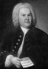

Творческий облик Иоганна Себастьяна Баха
 Иоганн Себастьян Бах (Johann Sebastian Bach)
Годы жизни: 1685-1750
Бах был гением такого масштаба, что даже сегодня кажется явлением непревзойденным, исключительным. Его творчество поистине неисчерпаемо: после «открытия» баховской музыки в XIX столетии интерес к ней неуклонно возрастает, произведения Баха завоевывают аудиторию даже среди слушателей, которые обычно не проявляют интереса к «серьезному» искусству.
Творчество Баха, с одной стороны, явилось своеобразным подведением итогов. В своей музыке композитор опирался на все то, что было достигнуто и открыто в музыкальном искусстве до него. Бах превосходно знал немецкую органную музыку, хоровую полифонию эпохи Возрождения, особенности немецкого и итальянского скрипичного стиля. Он не только знакомился, но и переписывал сочинения современных ему французских клавесинистов (в первую очередь Куперена), итальянских скрипачей (Корелли, Вивальди), крупнейших представителей итальянской оперы. Обладая удивительной восприимчивостью ко всему новому, Бах разрабатывал и обобщал накопленный творческий опыт.
Вместе с тем, он был гениальным новатором, открывшим для развития мировой музыкальной культуры новые перспективы. Его могучее влияние сказалось и в творчестве великих композиторов XIX века (Бетховена, Брамса, Вагнера, Глинки, Танеева), и в произведениях выдающихся мастеров XX века (Шостаковича, Онеггера).
Творческое наследие Баха почти необозримо, оно включает более 1000 произведений самых разных жанров, причем среди них есть такие, масштабы которых исключительны для своего времени (MP). Произведения Баха можно разделить на три основные жанровые группы:
- вокально-инструментальная музыка;
- органная музыка,
- музыка для других инструментов (клавира, скрипки, флейты и т.д.) и инструментальных ансамблей (в т.ч. оркестровая).
Произведения каждой группы связаны, в основном, с определенным периодом творческой биографии Баха. Самые значительные органные сочинения были созданы в Веймаре, клавирные и оркестровые главным образом относятся к Кётенскому периоду, вокально-инструментальные в большинстве написаны в Лейпциге.
Основные жанры, в которых работал Бах, традиционны: это мессы и пассионы, кантаты и оратории, хоральные обработки, прелюдии и фуги, танцевальные сюиты и концерты. Унаследовав эти жанры от своих предшественников, Бах придал им такой размах, которого они прежде не знали. Он обновил их новыми средствами выразительности, обогатил чертами, заимствованными из других жанров музыкального творчества. Ярким примером может служить Хроматическая фантазия d-moll. Созданная для клавира, она включает выразительные свойства больших органных импровизаций, а также драматическую декламацию театрального происхождения.
Баховское творчество, при всей своей универсальности и всеохватности, «обошло стороной» один из ведущих жанров своего времени – оперу. Вместе с тем, мало что отличает некоторые светские кантаты Баха от комедийной интермедии, уже перерождавшейся в то время в Италии в оперу-buffa. Композитор нередко называл их, подобно первым итальянским операм, «драмами на музыке». Можно сказать, что такие произведения Баха, как «Кофейная», «Крестьянская» кантаты, решенные как остроумные жанровые сценки из повседневной жизни, предвосхитили немецкий зингшпиль.
Круг образов и идейное содержание
Образное содержание музыки Баха безгранично в своей широте. Ему одинаково доступно величественное и простое. Баховское искусство вмещает и глубокую скорбь, и простодушный юмор, острейший драматизм и философское размышление. Подобно Генделю Бах отразил существенные стороны своей эпохи – первой половины XVIII века, однако иные – не действенную героику, а религиозно-философские проблемы, выдвинутые Реформацией. В своей музыке он размышляет о самых важных, вечных вопросах человеческой жизни – о назначении человека, о его нравственном долге, о жизни и смерти. Эти размышления чаще всего связаны с религиозной тематикой, ведь Бах почти всю свою жизнь служил при церкви, огромную часть музыки написал для церкви, сам был глубоко верующим человеком, прекрасно знающим Священное Писание. Он соблюдал церковные праздники, постился, исповедовался, за несколько дней до смерти принял причастие. Библия на двух языках – немецком и латинском – была его настольной книгой.
Иисус Христос у Баха – главный герой и идеал. В этом образе композитор видел олицетворение лучших человеческих качеств: силы духа, верности избранному пути, чистоты помыслов. Самое сокровенное в истории Христа для Баха – это Голгофа и крест, жертвенный подвиг Иисуса ради спасения человечества. Эта тема, будучи важнейшей в баховском творчестве, получает этическое, нравственное истолкование.
Музыкальная символика
Сложный мир произведений Баха раскрывается через музыкальную символику, сложившуюся в русле эстетики барокко. Современниками Баха его музыка, в том числе инструментальная, «чистая», воспринималась как понятная речь благодаря наличию в ней устойчивых мелодических оборотов, выражающих определенные понятия, эмоции, идеи. По аналогии с классическим ораторским искусством эти звуковые формулы получили название музыкально–риторических фигур. Одни риторические фигуры носили изобразительный характер (например, anabasis – восхождение, catabasis – нисхождение, circulatio – вращение, fuga – бег, tirata – стрела); другие подражали интонациям человеческой речи (exclamatio – восклицание – восходящая секста); третьи передавали аффект (suspiratio – вздох, passus duriusculus – хроматический ход, употребляемый для выражения скорби, страдания).
Благодаря устойчивой семантике, музыкальные фигуры превратились в «знаки», эмблемы определенных чувств и понятий. Например, нисходящие мелодии (catadasis) употреблялись для символики печали, умирания, положения в гроб; восходящие звукоряды выражали символику воскресения и пр.
Мотивы-символы присутствуют во всех сочинениях Баха, причем это не только музыкально-риторические фигуры. В символическом значении часто выступают и мелодии протестантских хоралов, их отрезки.
С протестантским хоралом Бах был связан на протяжении всей своей жизни – и по вероисповеданию, и по роду деятельности в качестве церковного музыканта. Он постоянно работал с хоралом в самых разных жанрах – органных хоральных прелюдиях, кантатах, пассионах. Вполне закономерно, что П.Х. стал неотъемлемой составной частью музыкального языка Баха.
Хоралы пелись всей протестантской общиной, они входили в духовный мир человека как естественный, необходимый элемент мироощущения. Хоральные мелодии и связанное с ними религиозное содержание были известны каждому, поэтому у людей баховского времени легко возникали ассоциации со смыслом хорала, с конкретным событием Священного Писания. Пронизывая всё творчество Баха, мелодии П.Х. наполняют его музыку, в том числе инструментальную, духовной программой, проясняющей содержание.
Символами также являются устойчивые звукосочетания, имеющие постоянные значения. Один из важнейших у Баха символов – символ креста, состоящий из четырех разнонаправленных нот. Если графически связать первую с третьей, а вторую с четвертой, образуется рисунок креста. (Любопытно, что фамилия BACH при нотной расшифровке образует такой же рисунок. Вероятно, композитор воспринимал это как некий перст судьбы).
Наконец, имеются многочисленные связи между кантатно–ораториальными (т.е. текстовыми) сочинениями Баха и его инструментальной музыкой. На основании всех перечисленных связей и анализа различных риторических фигур, разработана система музыкальных символов Баха. Огромный вклад в ее разработку внесли А. Швейцер, Ф. Бузони, Б. Яворский, М. Юдина.
«Второе рождение»
Гениальное творчество Баха не было по-настоящему оценено его современниками. Пользуясь славой как органист, он при жизни не привлек должного внимания как композитор. О его творчестве не было написано ни одной серьезной работы, лишь ничтожная часть произведений была опубликована. После смерти Баха его рукописи пылились в архивах, многие безвозвратно затерялись, а имя композитора забылось.
Подлинный интерес к Баху возник лишь в XIX веке. Начало ему положил Ф. Мендельсон, случайно нашедший в библиотеке ноты «Страстей по Матфею». Под его управлением это произведение было исполнено в Лейпциге. Большинство слушателей, буквально потрясенных музыкой, никогда не слышало имя автора. Это было вторым рождением Баха.
К столетию со дня его смерти (1850) в Лейпциге было организовано баховское общество, поставившее целью издание всех сохранившихся рукописей композитора в виде полного собрания сочинений (46 томов).
Несколько сыновей Баха стали видными музыкантами: Филипп Эммануэль, Вильгельм Фридеман (Дрезден), Иоганн Кристоф (Бюккенбург), Иоганн Кристиан (самый младший, «Лондонский» Бах).
Биография Баха
|
ГОДЫ |
ЖИЗНЬ |
ТВОРЧЕСТВО |
|
1685 |
Родился в г. Эйзенахе в семье потомственного музыканта. Эта профессия была традиционной для всего рода Бахов: почти все его представители на протяжении нескольких веков были музыкантами. Первым музыкальным наставником Иоганна Себастьяна был его отец. Кроме того, имея прекрасный голос, он пел в хоре. |
|
|
В 9 лет
|
Остался круглым сиротой и был взят на воспитание в семью старшего брата – Иоганна Кристофа, который служил органистом в Ордруфе. |
|
|
1700 |
В 15 лет с отличием закончил Ордруфский лицей и переселился в Люнебург, где поступил в хор «избранных певчих» (в Michaelschule). К 17 годам он владел клавесином, скрипкой, альтом, органом. |
|
|
1703 |
В течение нескольких следующих лет несколько раз меняет местожительство, служа музыкантом (скрипачом, органистом) в небольших немецких городах: Веймаре (1703), Арнштадте (1704), Мюльхаузене (1707). Причина переезда каждый раз одна и та же – неудовлетворенность условиями работы, зависимое положение. |
Появляются первые сочинения – для органа, клавира («Каприччио на отъезд возлюбленного брата»), первые духовные кантаты. |
|
1708 |
ВЕЙМАРСКИЙ ПЕРИОД Поступил на службу к веймарскому герцогу в качестве придворного органиста и камерного музыканта в капелле. |
– годы первой композиторской зрелости Баха, очень плодотворные в творческом отношении. Достигнута кульминация в органном творчестве – появилось все лучшее, что создано Бахом для этого инструмента: Токката и фуга ре-минор, прелюдия и фуга ля-минор, прелюдия и фуга до-минор, Токката до мажор, Пассакалия до-минор, а также знаменитая «Органная книжечка». Параллельно с органными сочинениями работает над жанром кантаты, над переложениями для клавира скрипичных итальянских концертов (более всего Вивальди). Веймарские годы характерны также первым обращением к жанру сольной скрипичной сонаты и сюиты. |
|
1717 |
КЁТЕНСКИЙ ПЕРИОД Становится «директором камерной музыки», то есть руководителем всей придворной музыкальной жизни при дворе кётенского князя. Стремясь дать сыновьям университетское образование, пробует перебраться в крупный город. |
Поскольку в Кётене отсутствовал хороший орган и хоровая капелла, сосредоточил основное внимание на клавирной (I том «ХТК», Хроматическая фантазия и фуга», Французские и Английские сюиты) и ансамблевой музыке (6 «Бранденбургских» концертов, сонаты для скрипки соло). |
|
1723 |
ЛЕЙПЦИГСКИЙ ПЕРИОД Становится кантором (руководителем хора) в Томасшуле – школе при церкви св. Фомы. Помимо огромной творческой работы и службы в церковной школе, принимал активное участие в деятельности «Музыкальной коллегии» города. Это было общество любителей музыки, которое устраивало концерты светской музыки для жителей города. |
– время наивысшего расцвета баховского гения. Были созданы лучшие произведения для хора с оркестром: Месса си-минор, Страсти по Иоанну и Страсти по Матфею, Рождественская оратория, большинство кантат (около 300 – в первые три года). В последнем десятилетии Бах в наибольшей степени сосредотачивается на музыке, свободной от какой-либо прикладной цели. Таковы II том «ХТК» (1744), а также партиты, «Итальянский концерт. Органная месса, Ария с различными вариациями» (после смерти Баха названными Гольдберговскими). |
|
|
Последние годы омрачены болезнью глаз. После неудачной операции ослеп, но продолжал сочинять. |
Два полифонических цикла – «Искусство фуги» и «Музыкальное приношение». |